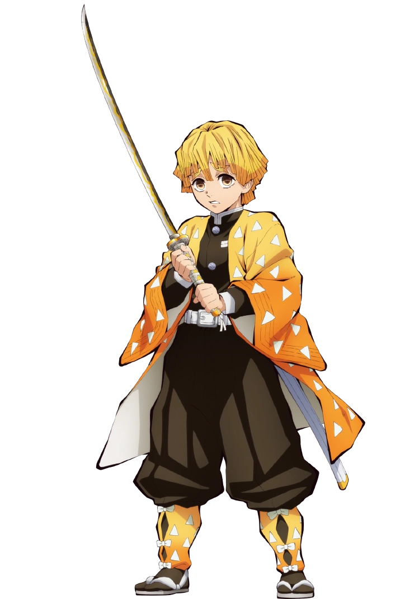

Zenitsu Agatsuma
Kanji
我妻 善逸
Rōmaji
Agatsuma Zen'itsu
Characteristics
Race
Human
Gender
Male
Age
16
Affiliation
Affiliation
Demon Slayer Corps
Occupation
Demon Slayer
Combat Style
Thunder Breathing
Debuts
Anime Debut
Episode 4
Manga Debut
Chapter 6
Portrayal
Japanese VA
Hiro Shimono
English VA
Aleks Le
"I hate myself more than anyone. I always think I have to get my act together, but I end up cowering, running away, sniveling. I want to change. I want to be a competent person."
-Zenitsu Agatsuma's desire to change for the better in You Must Master a Single Thing
Zenitsu Agatsuma (我妻 善逸Agatsuma Zen'itsu)is one of the main protagonists of Demon Slayer: Kimetsu no Yaiba and along with Inosuke Hashibira, a travelling companion of Tanjiro Kamado and Nezuko Kamado. He is also a Demon Slayer in the Demon Slayer Corps.
Appearance
Zenitsu is a young boy of average height with fair skin and downward-sloped, scared-looking eyes that fade from soft brown to gold. He has short, yellow hair of varying lengths, cutting off squarely at the ends where it fades to a darker orange color, that falls in front of his face in uneven bangs, loosely resembling a bowl cut. Before he became a Demon Slayer, Zenitsu's hair was originally black, but it turned the color it is currently when he was struck by lightning during his training.
For some time following the battle at Mount Natagumo, his limbs temporarily shrunk due to the Spider Demon (Son)'s poison but were able to return to normal afterward thanks to the medicine given to him by Shinobu Kocho.
He wears a paler brown version of the standard Demon Slayer uniform, which consists of a dark brown gakuran jacket, a white belt around his waist and hakama pants that extend, as well as his signature white-triangle patterned, yellow and orange gradient haori. As well as this, Zenitsu also sports a pair of Kyahan, tied at the front in 3 white bows, with the same pattern as his haori, pale brown tabi socks and white-laced zōri.
Personality

Zenitsu comes off as a coward, as he often claims that he doesn't have long to live due to the dangerous job of being a Demon Slayer. He also has rather low self-esteem despite his strength, even considering himself useless as seen when he couldn't believe he had slain a demon and tricked himself into instead believing that it was Shoichi, even though the latter was a young child who didn't possess any form of special demon-slaying ability. Zenitsu is in a constant state of fear and always cries and tries to run away at the sight of danger, claiming he wants to live a modest, normal life, instead of that of a Demon Slayer. Due to this, Zenitsu screams and shouts a lot, sometimes annoying the people around him. He is also shown to be pessimistic at times, especially during the Hashira Training Arc where he lashed out at Tanjiro and Inosuke for viewing the training positively.
However, despite these weaknesses, Zenitsu still wants to live up to the expectations others set up for him and will try his hardest when he needs to. He holds great respect and admiration towards his comrades and his deceased teacher, Jigoro Kuwajima, and his inner focus and drive in avenging him help to wash away his cowardice and second thoughts when he is in a pinch. Zenitsu also hates himself for how cowardly and incompetent he is, genuinely striving to better himself.

Zenitsu is also shown to be something of a wannabe womanizer, stemming from a desire to not be single should he be killed. He tends to hit on girls who he thinks are cute and asks them to marry him, much to their annoyance. This womanizing nature is shown to override his docile personality, in particular when he believes his comrades are "flirting" with cute girls, he soon snaps and goes in long hysterical rants and complaints. Zenitsu seems to have a strong crush on Nezuko, openly expressing his affection for her and always rushing to protect her as if on instinct. During these times, he is also shown to become physically aggressive, lashing out at them in frustration. Though, Zenitsu does show to respect women, telling Daki to let go of a girl that Daki nearly tore the ear off of, and later demanded her to apologize.
As the only one boy in the trio to have grown up in the city, Zenitsu shows more knowledge about how the city works and is constantly embarrassed by his partners' naivety.
Before the raid on the Infinity Castle, Zenitsu gives off a different, more serious vibe as if he is focused on something important. This development occurred after receiving a letter from Chuntaro, which revealed his master's death and Kaigaku's role behind it. During his fight against Kaigaku, Zenitsu is stern and becomes enraged, causing him to angrily yell at him for disrespecting their cultivator. His sudden change surprises his ex-senior, as Zenitsu shows a more mature persona compared to his usual cowardice.
Abilities
Overall Abilities: From the beginning, Zenitsu comes off as a talented and skilled Demon Slayer though he denies this. Zenitsu's true strength awakens when he is asleep, as that's when his nerves that normally keep him from accessing his true strength give out, making him more sagacious, calm and precise in combat, which allowed him to instantly decapitate the Tongue Demon and defeat the Son Spider Demon by himself. He was later able to defend 3 entire train carts being under attack by Enmu, Lower Rank One, along with Nezuko. A few months after that, he was able to go toe-to-toe with an awakened Daki with the assistance of Inosuke, and later managed to blitz her with Thunderclap and Flash: God Speed. As further credence to his strength, Zenitsu was able to advance to the highest point of the Hashira Training.
However, his true strength seems to manifest when Zenitsu can fight while awake, as he managed to match the new Upper Rank Six, Kaigaku, in power by himself and later blitzed and decapitated him before he could react, although he sustained several severe injuries. However, it was displayed that his feelings of regret and melancholy were the only things keeping Zenitsu from immediately killing Kaigaku, his former senior. Moreover, he could keep up with and overpower the Demon King, Muzan Kibutsuji, albeit he was severely weakened by the Anti-Kibutsuji Drug. Nonetheless, Zenitsu's strength more than likely matched that of the Hashira by the end of the series.
Enhanced Hearing: Zenitsu possesses a heightened sense of hearing, allowing him to detect danger from even the faintest of sounds. Using his superhuman hearing, he has displayed the ability to decipher layers upon layers of sound in one of the brothels and even in the Infinity Castle. As another testament to his great sound detection ability, he can perfectly replicate any tune he hears on a Shamisen and Koto only after listening to it once for the first time, achieving a perfect pitch despite having no musical background. Zenitsu's exceptional hearing also enables him to fight in his asleep, an impressive feat as he has no visual aid and can only use sound to discern his surroundings while keeping up with the attacks of demons.
Enhanced Strength: Zenitsu has attained amazing physical strength through years of harsh training. Zenitsu can hold down Inosuke Hashibira with his bare hands and throw his entire body by grabbing to and swinging one of his legs. Most importantly, Zenitsu has incredible leg strength allowing him to jump extremely high and at blistering speeds to perform his Thunder Breathing techniques. He was also able to damage the body of Muzan, whose body has the highest durability out of all the demons, further testifying his superhuman physical strength.
Immense Speed & Reflexes: Zenitsu is extremely fast, being able to easily move faster than even the eye can see. Even at the beginning of the series when he was at his weakest, shown when his speed could evade the attacks of several demons such as the Tongue Demon and Son Spider Demon effortlessly and later blitz them. During the Mugen Train Arc, he was able to save Nezuko from Lower Rank One, Enmu's, flesh appendages, and slice through many of them before Enmu could react.
As he progresses, his speed has improved to the point that his movements couldn't be perceived by Upper Rank demons, like Daki and Kaigaku, the former's reflexes having been amplified multiple times during the fight and latter being a user of the same Breathing Style as Zenitsu. Moreover, Zenitsu could move faster than Kaigaku's lightning Blood Demon Art and cut his neck before the attack reached him. More impressively, Zenitsu could land multiple hits on the imperceptibly fast Demon King, Muzan Kibutsuji, with his techniques, albeit he was severely weakened then.
Immense Stamina & Endurance: Zenitsu has incredible stamina and endurance. He has been shown to continue fighting even after being affected by lethal poison from the Son Spider Demon that was gradually weakening him and turning him into a spider. He was also able to defend 3 train cars with Nezuko for an extended period of time without tiring out. Later, Zenitsu, along with Inosuke, engaged in combat with Upper Rank Six, Daki, for a relatively long period of time, even after receiving numerous wounds from the Upper Rank and later was trapped under rubble. Still, Zenitsu had enough stamina left to unleash his Thunderclap and Flash: God Speed technique against twice, once to get out of the rubble, the second to blitz Daki.
He was able to continue fighting with Kaigaku even after being on the receiving end of multiple Blood Demon Art-enhanced Thunder Breathing techniques that burned his skin and eventually summon enough power to use his ultimate technique and blitz him. Zenitsu was even able to exert himself for around half an hour during the fight against Muzan, even being able to surpass his limit of only being able to use his Thunderclap and Flash: God Speed technique twice a day before his legs gave out.

Indomitable Will: Zenitsu possesses indomitable willpower and spirit in order to kill demons. This was displayed when he absolutely refused to let Inosuke kill the demon inside Tanjiro's box, and protected it to the end despite getting relentlessly beat up by Inosuke. While he was asleep against the battle against Daki, Zenitsu had the willpower to continue fighting despite sustaining numerous slash wounds all over his body and having his feet broken. Through sheer will and anger, Zenitsu was able to overcome his cowardice and stay awake in battle against demons, shown during his bout with Kaigaku and Muzan, especially in the fight with the latter in which he refused to give up and persisted despite being enervated and injured.
Tactical Intellect: Even when fighting unconscious, Zenitsu has displayed incredible judgement and tactical intellect. When fighting consciously, this ability is fully released. This able was best exhibited during his battle against Upper Rank Six, Daki. When Inosuke made an erroneous deduction of her weaknesses, Zenitsu correctly explicated that all they need to do is keep both demons' head disconnected to kill them. After his bout with Kaigaku commenced, he was able to clearly think and process his techniques and demonic abilities.
Unconscious Combat: Zenitsu has the ability to fight when he sleeps, which allows him to awaken his true strength. While awake, his nerves and fear cause him to freeze up so he cannot move. When his life is in danger, his nerves and fear grow so strong that he passes out. But while asleep, his nerves are no longer holding him back, allowing him to fight and move with great judgement, precision and skill. His hearing also places a big part in allowing Zenitsu to fight unconsciously, as it enables him to discern his surroundings and the location of his enemies and their attacks. This also allows him to fight even after he falls victim to Enmu's spell that makes anyone go into deep sleep.
Fighting Style
Master Swordsman: Zenitsu is an incredibly talented swordsman, especially in his proficiency in extremely fast Iaijutsu-like swordsmanship and the Thunderclap and Flash technique, to the point he can create offshoots of the technique and utilize it even while he is asleep. His swordsmanship skill allowed him to fend off dozens of spiders and defend 3 train carts that Enmu was constantly attacking. Zenitsu's sword wielding skill evolved to the point that he could fight against Upper Rank demons of the Twelve Kizuki and later matched a severely weakened Muzan, implying that his swordsmanship skill has most likely improved to the point that it matched that of the Hashira, the highest-ranked and most powerful swordsmen in the Demon Slayer Corps.
Breathing Style

Thunder Breathing: (雷の呼吸 Kaminari no kokyū): A Breathing Style Zenitsu learned from a cultivator and his teacher, Jigoro Kuwajima, but failed to master all the forms in the swordsmanship style but could only be able to use the first of the six forms in it, known as Thunderclap and Flash. However, Zenitsu has become incredibly proficient in fighting and winning using the first form alone, even creating several variations and modifications to it and being able to successfully perform the technique even while unconscious. Later, Zenitsu even created an entire new form in Thunder Breathing, something only a Hashira, specifically Giyu and Muichiro, has done before. This form allowed him to turn the tables against his opponent, Kaigaku, and overpower and decapitate him instantly.
TechniquesEquipment
Standard Nichirin Katana: As a Demon Slayer, Zenitsu carries around a standard sized and shaped Nichirin katana with lightning streaks along the entire blade. His sword's hilt is circular shaped with 4 slight indentations, the center has a silver tone with small triangles and has a golden border. The handle is white with several yellow triangles going down it. The base of the handle is gold with two short, white ribbons hanging off it. With his katana, Zenitsu has a standard sword sheath that is white in color.